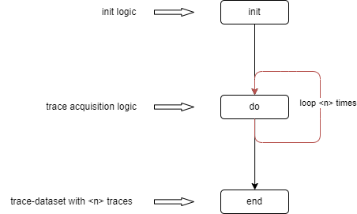

Acquisition
Acquisition 管理数据的采集流程。
数据采集又分成了两个模式：测试、运行。测试模式可以理解为调试模式，在该模式下，可以实时调整Cracker的配置和采集数据配置以达到更好的采集效果（当前该模式在Jupyter环境下才有意义，在Jpupyter环境可以通过示波器面板实时查看波形效果），在此模式下采集到的波形数据不保存。
在运行模式下用户无法对设备进行实时配置，主要用于在各种参数调试完成后进行数据的采集，该模式下可以指定保存文件的路径和保存文件的格式。
采集流程主要包含如下步骤：
初始化前置操作
初始化操作
后置初始化操作
前置采集操作
采集操作
后置采集操作
前置完成操作
完成操作
后置完成操作
其中，最终用户需要关注的是 初始化 和 采集 两个操作，在代码中分别是 Acquisition 的 init 和 do 两个方法，一般情况下，在 init 中进行设备的密钥设置等操作，do 中则是具体的加密数据发送和结果接收等操作。
流程图如下：
Acquisition
- class cracknuts.acquisition.acquisition.Acquisition(cracker, trace_count=1000, sample_length=-1, sample_offset=0, data_length=0, trigger_judge_wait_time=0.05, trigger_judge_timeout=1.0, do_error_handler_strategy=0, do_error_max_count=-1, file_format='scarr', file_path='auto')[源代码]
基类：
ABC数据采集流程控制类
-
DO_ERROR_HANDLER_STRATEGY_CONTINUE_UNTIL_MAX_ERROR_COUNT:
int= 1
-
DO_ERROR_HANDLER_STRATEGY_EXIT:
int= 0
-
STATUS_RUNNING:
int= 2
-
STATUS_STOPPED:
int= 0
-
STATUS_TESTING:
int= 1
- static builder()[源代码]
- config_cracker()[源代码]
- config_scrat()[源代码]
- connect_cracker()[源代码]
连接到cracker设备
- connect_net()[源代码]
- connect_scrat()[源代码]
Connect to scrat device :return:
- abstract do()[源代码]
do 逻辑函数，用户需要在子类实现。
- dump_config(path=None)[源代码]
导出当前配置到JSON，如果指定了 path 则导出到文件，否则导出到字符串。
- 参数:
path (
str) -- JSON 路径- 返回类型:
str|None- 返回:
JSON 内容，如果 path 指定则返回空
- get_last_wave()[源代码]
获取最后的波形数据。
- 返回类型:
dict[int,ndarray] |None
- get_status()[源代码]
- abstract init()[源代码]
init 逻辑，用户需要在子类实现。
- is_running()[源代码]
- load_config_from_file(path)[源代码]
从 JSON 文件加载配置。
- 参数:
path (
str) -- JSON 路径- 返回类型:
None
- load_config_from_str(json_str)[源代码]
Load config from a JSON string.
- 参数:
json_str (
str) -- the JSON string- 返回类型:
None
- on_run_progress_changed(callback)[源代码]
- 返回类型:
None
- on_status_changed(callback)[源代码]
最终用户不需要使用该函数。
status: 0 stopped, 1 testing, 2 running 3 paused
- 返回类型:
None
- on_wave_loaded(callback)[源代码]
- 返回类型:
None
- pause()[源代码]
暂停测试或运行模式。
- pre_do()[源代码]
- pre_init()[源代码]
- resume()[源代码]
从测试或运行模式恢复。
- run(count=1, sample_length=1024, sample_offset=0, data_length=None, trigger_judge_wait_time=None, trigger_judge_timeout=None, do_error_max_count=None, do_error_handler_strategy=None, file_format='scarr', file_path='auto')[源代码]
在后台启动运行模式，该方法的参数会覆盖 __init__ 中配置的参数。
- 参数:
count (int) -- 需要曲线的数量。
sample_length (int) -- 需要采集的曲线长度。
sample_offset (int) -- 采集偏移。
data_length (int) -- 采集的数据的长度。
trigger_judge_wait_time (float) -- 触发 判断等待时常，单位：秒。
trigger_judge_timeout (float) -- 触发 超时时常，单位：秒
do_error_max_count (int) -- 最大出现错误次数，如果 do_error_handler_strategy 设置 0，则不生效。
do_error_handler_strategy (int) -- 错误处理策略：0 立即退出，1 超过尝试次数后退出。
file_format (str) -- 保存文件格式，"scarr" 或者 "numpy"
file_path (str) -- 文件保存路径，如果设置了 "auto"，则在当前工作目录下创建一个以时间戳格式命名的文件夹保存数据。
- run_sync(count=1, sample_length=1024, sample_offset=0, trigger_judge_wait_time=None, trigger_judge_timeout=None, do_error_max_count=None, do_error_handler_strategy=None, file_format='scarr', file_path='auto')[源代码]
前台启动 运行 模式，这会导致阻塞。
- 参数:
count (int) -- 需要曲线的数量。
sample_length (int) -- 需要采集的曲线长度。
sample_offset (int) -- 采集偏移。
trigger_judge_wait_time (float) -- 触发 判断等待时常，单位：秒。
trigger_judge_timeout (float) -- 触发 超时时常，单位：秒
do_error_max_count (int) -- 最大出现错误次数，如果 do_error_handler_strategy 设置 0，则不生效。
do_error_handler_strategy (int) -- 错误处理策略：0 立即退出，1 超过尝试次数后退出。
file_format (str) -- 保存文件格式，"scarr" 或者 "numpy"
file_path (str) -- 文件保存路径，如果设置了 "auto"，则在当前工作目录下创建一个以时间戳格式命名的文件夹保存数据。
- set_cracker(cracker)[源代码]
- stop()[源代码]
停止测试或运行模式。
- test(count=-1, sample_length=None, sample_offset=None, trigger_judge_wait_time=None, trigger_judge_timeout=None, do_error_max_count=None, do_error_handler_strategy=None)[源代码]
在后台启动 测试 模式。
- 参数:
count (int) -- 需要采集的曲线数量，一般不要指定，使用默认值：-1。
sample_length (int) -- 需要采集的曲线长度。
sample_offset (int) -- 采集偏移。
trigger_judge_wait_time (float) -- 触发 判断等待时常，单位：秒。
trigger_judge_timeout (float) -- 触发 超时时常，单位：秒
do_error_max_count (int) -- 最大出现错误次数，如果 do_error_handler_strategy 设置 0，则不生效。
do_error_handler_strategy (
int|None) -- 错误处理策略：0 立即退出，1 超过尝试次数后退出。
- test_sync(count=-1, sample_length=None, sample_offset=None, trigger_judge_wait_time=None, trigger_judge_timeout=None, do_error_max_count=None, do_error_handler_strategy=None)[源代码]
前台启动 测试 模式，这会导致阻塞。
- 参数:
count (int) -- 需要采集的曲线数量，一般不要指定，使用默认值：-1。
sample_length (int) -- 需要采集的曲线长度。
sample_offset (int) -- 采集偏移。
trigger_judge_wait_time (float) -- 触发 判断等待时常，单位：秒。
trigger_judge_timeout (float) -- 触发 超时时常，单位：秒
do_error_max_count (int) -- 最大出现错误次数，如果 do_error_handler_strategy 设置 0，则不生效。
do_error_handler_strategy (
int|None) -- 错误处理策略：0 立即退出，1 超过尝试次数后退出。
- transfer()[源代码]
-
DO_ERROR_HANDLER_STRATEGY_CONTINUE_UNTIL_MAX_ERROR_COUNT: